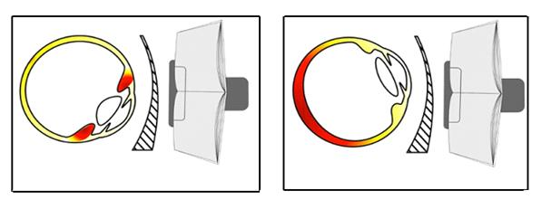

Статьи - Профилактика возникновения и лечение функциональных нарушений аккомодации с использованием очков «anlauf» с асферичсеской линзой горизонтальной прогрессии. (Корнюшина Т.А. с соавт.)
06-05-2014
Т.А.Корнюшина1, Р.А. Ибатулин2, А.С. Ковычев2
Москва, 1 - ФГБУ «МНТК «Микрохирургия глаза» имени академика С.Н.Фёдорова», 2 - ООО «Артоптика»
Актуальность. Широкое внедрение компьютеров в школы, институты, во все отрасли промышленности, а также их использование в домашних условиях в значительной степени повысило нагрузку на зрительный анализатор. Чрезмерные зрительные нагрузки приводят к перенапряжению зрительной системы, которое выражается снижением зрения вдаль, затруднениями при чтении и письме, затуманиванием зрения, слезотечением покраснением глазных яблок, головными болями и другими астенопическими жалобами.
Число школьников и студентов с расстройствами зрения возрастает с каждым годом.Помимо школьников и студентов чрезмерные зрительные нагрузки испытывают взрослый лица, занятые зрительно-напряженным трудом с использованием компьютеров.В результате зрительно-напряженной работы возникает хроническое зрительное утомление, которое переходит в состояние перенапряжения, ведущее к расстройству аккомодации и конвергенции. Существующие способы восстановления аккомодационной способности глаз трудоемки, лечение проводится курсами по 2-3 недели в условиях офтальмологического кабинета с привлечением медицинского персонала, требует отрыва пациентов от учебы и работы, что не всегда возможно.
Цель работы - разработать устройство для лечения функциональных зрительных расстройств и профилактики их возникновения у лиц, занятых зрительно-напряженными работами.
Материал и методы исследования. Обследовано 15 человек (30 глаз) в возрасте 8 – 25 лет с эмметропической рефракцией, средняя рефракция составила -0,19±0,01 дптр. У всех пациентов была астенопия, которая проявлялась в ухудшении зрения вдаль, затруднениями при чтении, болями в глазах и головными болями. Проводилось стандартное офтальмологическое обследование: визометрия, рефрактометрия, биомикроскопия, кроме этого, исследовались показатели абсолютной и относительной аккомодации.
Результаты. Для профилактики возникновения расстройств зрения при зрительно-напряженных работах необходимо создание условий, при которых не происходило бы перенапряжение аккомодации. С этой целью нами была разработаны очки «anlauf», оптические элементы, которых выполнены в виде асферических линз. В геометрическом центре линз - рефракция нулевая, по одну сторону от геометрического центра рефракция монотонно усиливается, а по другую сторону от геометрического центра монотонно ослабевает. При чтении происходят содружественные повороты глаз, вынуждающие смотреть вдоль горизонтального меридиана асферической линзы, рефракция в котором плавно усиливается. Это приводит к расфокусированию объектов на сетчатке. Для восстановления четкого изображения аккомодационная система плавно напрягается; при переводе взора в другую сторону происходит плавное расслабление аккомодации, что оказывает тренировочное воздействие (рис.).

а) б)
Рис. Действие асферической линзы с горизонтальной прогрессией
а) напряжение аккомодации, б) расслабление аккомодации
При наличии аметропии линзы изготавливаются с учетом необходимой коррекции, при пресбиопии асферические линзы изготавливаются с учетом коррекции для близи.
Проведенная апробация очков «anlauf» показала, что в ходе ношения очков 2 часа в день в течение 2 недель происходит ослабление рефракции в среднем на 0,5 дптр, острота зрения без коррекции повысилась на 0,2 (табл.). Увеличение объема абсолютной аккомодации в среднем составило 3,4 дптр, при этом, до ношения очков «anlauf» разница объемов аккомодации двух глаз составляла 1,8±0,57 дптр, а после лечения она снизилась до 0,2±0,05дптр. Запас относительной аккомодации увеличился в среднем на 2,2 дптр. У всех пациентов исчезли астенопические жалобы.
Таблица
Изменение функциональных показателей зрения
после ношения очков «anlauf»
| Время наблюдения | Острота зрения без коррекции | Объем абсолютной аккомодоации (дптр) |
Анизоак-комодация (дптр) |
Запас относи-тельной акко-модации (дптр) |
| до лечения | 0,7±0,03 | 5,3±0,56 | 1,8±0,57 | 1,2±0,28 |
| после лечения | 0,9±0,02 | 8,7±0,16 | 0,2±0,05 | 3,4±0,58 |
Заключение. Разработанные очки «anlauf» могут использоваться пациентами разного возраста с различными видами рефракции при зрительно-напряженной работе, а также при функциональных расстройствах аккомодации, бинокулярного зрения и астенопии. Ношение очков «anlauf» способствует нормализации показателей аккомодации и повышению остроты зрения, что приводит к исчезновению астенопии.